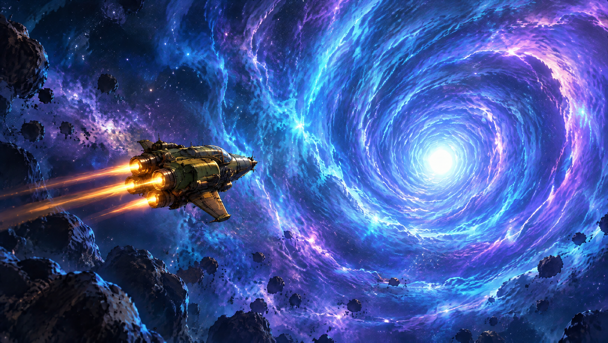
Aproximação do buraco de minhoca. Movimento lento em direção à luz.
Motor e início da música.
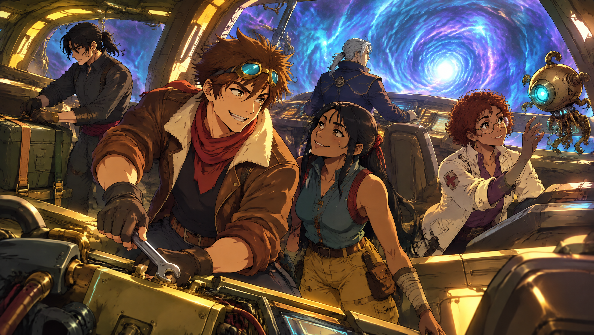
Vincent prende a carga; Elias pilota; Íris examina Spectre. Marty termina o reparo.
Marty: “Pronto. Obra de um gênio.”
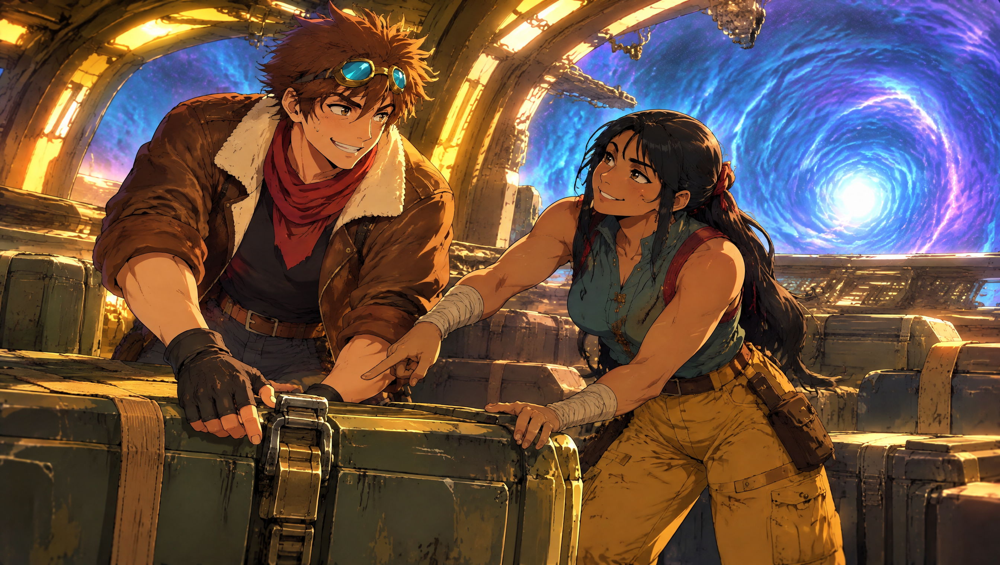
Letícia segura a caixa e aponta a trava. Marty corrige o descuido.
Letícia: “O gênio esqueceu a trava.” Marty: “Eu sabia que faltava um detalhe.”
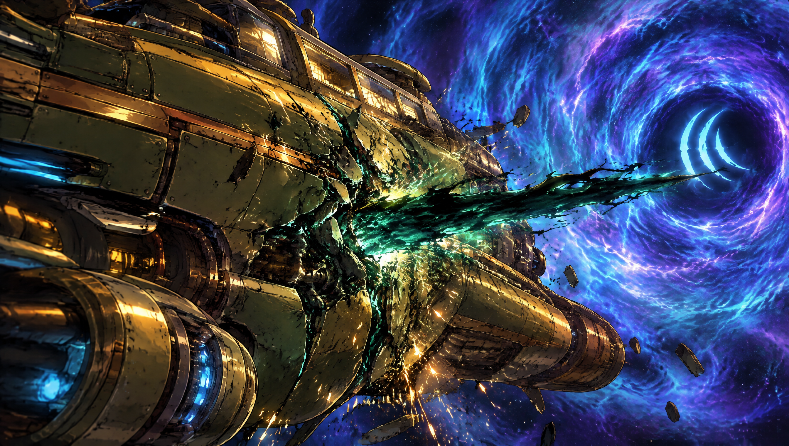
Uma descarga atinge o casco; as fraturas invadem a nave.
Elias: “Estão atirando na gente!” Marty: “Todo mundo para a sala do núcleo!”
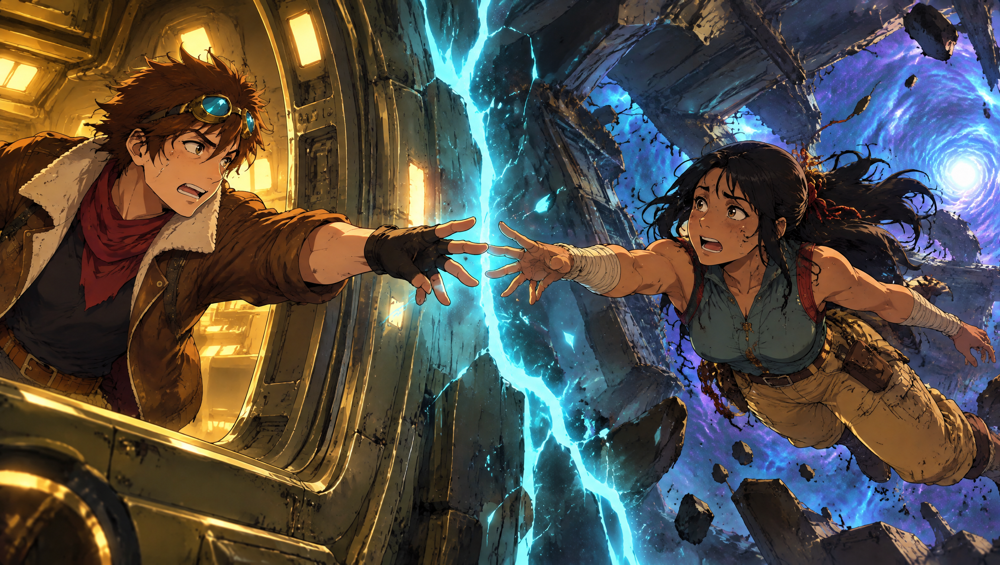
As mãos quase se tocam. A fratura afasta o casal; a nave se rompe.
Letícia: “Marty!” O som se apaga.
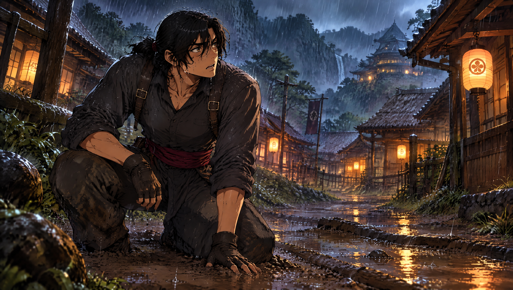
Chegada à aldeia japonesa, muito antes de se tornar espadachim.
Chuva.
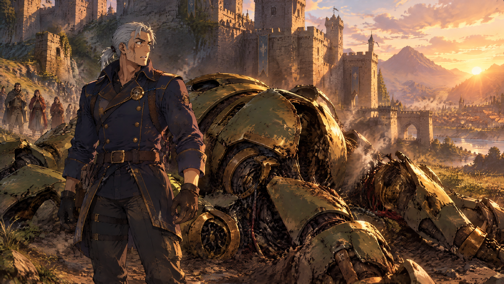
Chegada ao reino medieval com o mecha, antes de aprender magia.
Vento e sino distante.
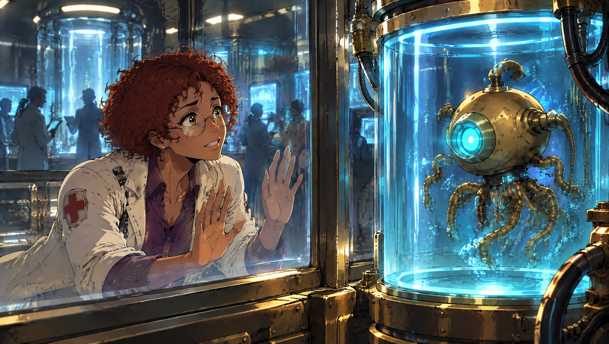
Capturada no laboratório, separada do Spectre por vidro.
Ruído de lâmpadas.
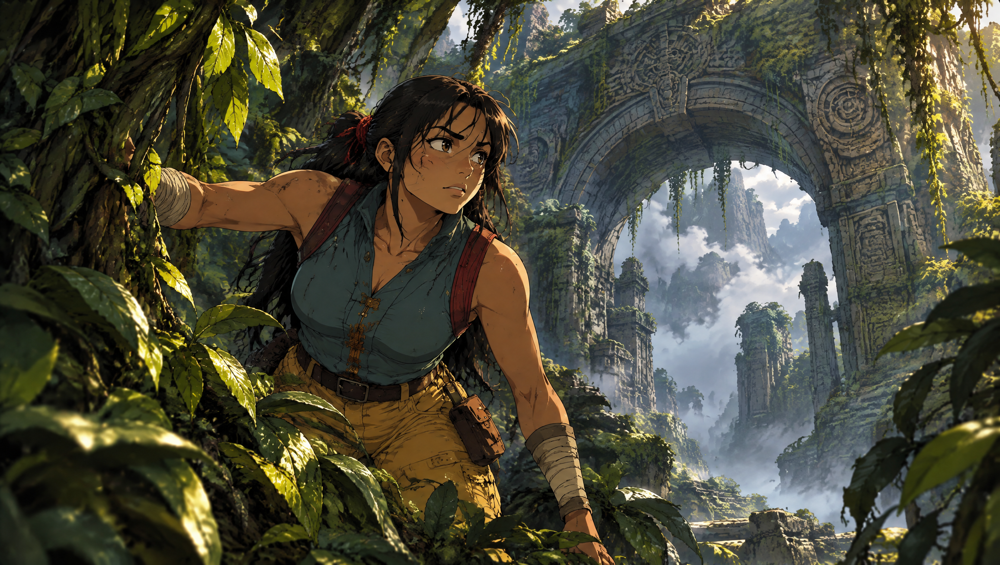
Sozinha entre as ruínas da floresta, procura um caminho.
Folhas e vento.
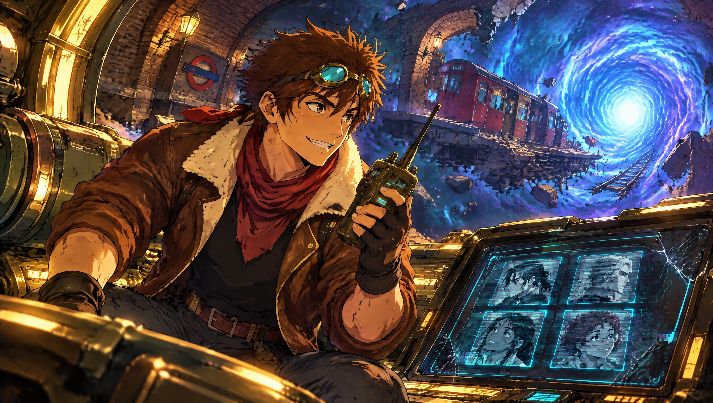
Marty desperta; encontra quatro sinais no painel. A porta começa a se abrir.
Marty: “Pessoal… alguém me escuta?” Sistema: “Sinais da tripulação detectados.”
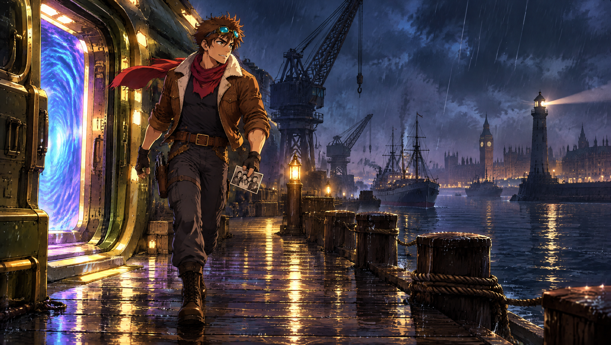
Marty olha a foto, guarda a ferramenta e atravessa para as Docas de 1941.
Marty: “Eu vou encontrar vocês. Um por um.”
12 · O primeiro mistério56–60s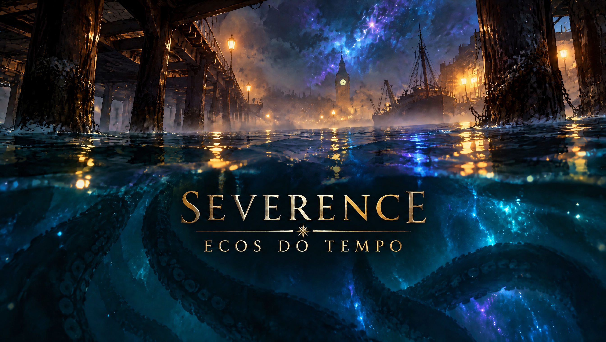
Sombra sob o píer; entra o título. Aos 60 segundos, o jogador assume o controle.
Sirene interrompida, depois a ambiência do porto.